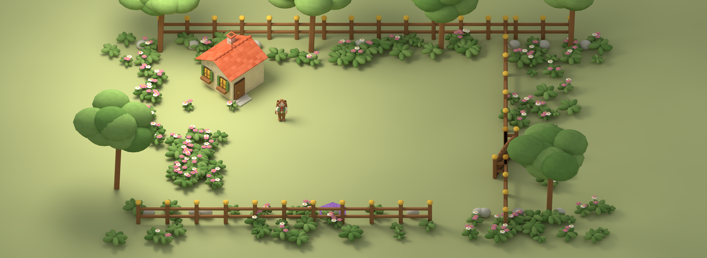
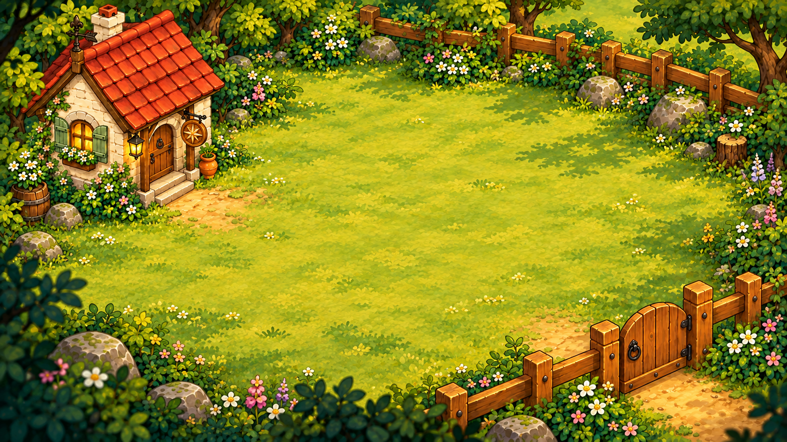
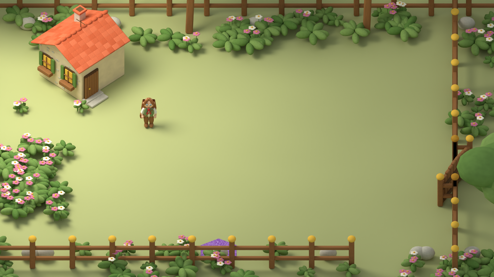
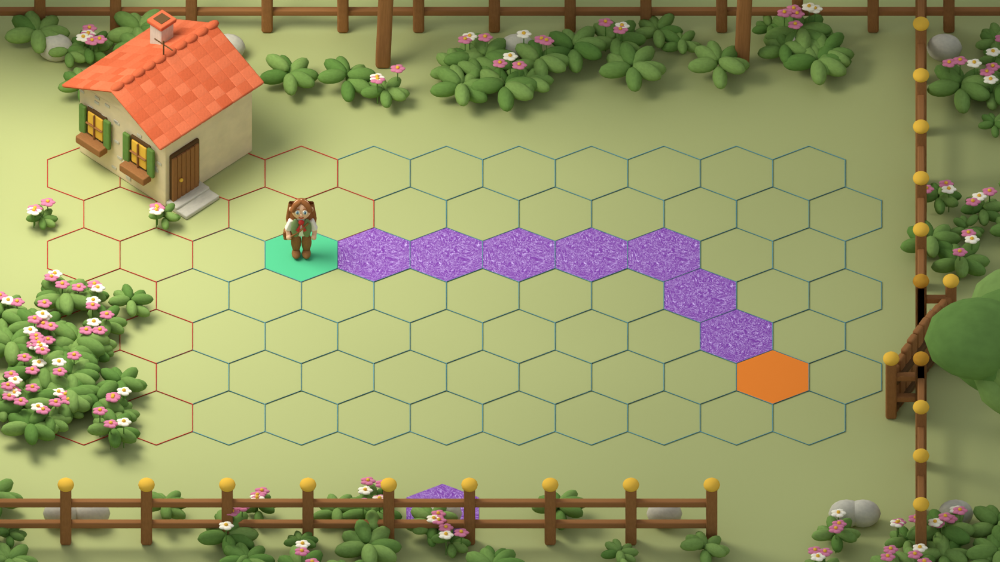

<!doctype html>
<meta charset="utf-8">
<meta name="viewport" content="width=device-width,initial-scale=1">
<title>#40 — пилот двора, кандидат для ревью</title>
<style>
*{box-sizing:border-box}body{margin:0;background:#eee4ce;color:#372e24;font:16px system-ui}header{height:52px;display:flex;align-items:center;gap:12px;padding:8px 16px;background:#fff5df}header strong{margin-right:auto}button{min-height:36px;border:1px solid #8b7958;border-radius:6px;background:#f4e7ca;color:inherit;padding:5px 12px}button[aria-pressed=true]{background:#c6d0a8}#stage{height:calc(100dvh - 120px);position:relative;overflow:hidden;background:#a6aa76}#frame{position:absolute}#frame img{position:absolute;width:100%;height:100%;object-fit:contain}footer{height:68px;padding:10px 16px;background:#e3d0a8;font-size:13px}#contact{display:none;grid-template-columns:repeat(3,1fr);gap:12px;padding:12px}figure{margin:0;background:#f4e7ca;padding:8px}figure img{width:100%;display:block}figcaption{padding:8px 0}.contact #stage{display:none}.contact #contact{display:grid}.contact footer{height:auto} @media(max-height:500px){header{height:44px;font-size:12px;padding:4px 8px;gap:4px}button{padding:3px 7px;font-size:12px}#stage{height:calc(100dvh - 106px)}footer{height:62px;font-size:11px;padding:6px 10px}}
</style>
<header><strong>Двор · кандидат #40</strong><button data-mode="clean">Рендер</button><button data-mode="check">Геометрия</button><button data-mode="reference">Референс</button><button data-mode="contact">Сравнение</button></header>
<main id="stage"><div id="frame"></div></main>
<section id="contact"><figure><figcaption>Утверждённый референс v6</figcaption></figure><figure><figcaption>Новый 3D-кандидат; стиль не принят</figcaption></figure><figure><figcaption>Реальные 77 гексов и эталонная дорога</figcaption></figure></section>
<footer>Изолированный стенд, без production UI и hit-test. Верхняя и нижняя полосы — резерв места, не проверка реального HUD/лотка. <span id="size"></span></footer>
<script>
const stage=document.querySelector('#stage'),frame=document.querySelector('#frame'),img=document.querySelector('#image');
function fit(){const w=stage.clientWidth,h=stage.clientHeight,s=Math.min(w/1672,h/941);Object.assign(frame.style,{width:`${1672*s}px`,height:`${941*s}px`,left:`${(w-1672*s)/2}px`,top:`${(h-941*s)/2}px`});Object.assign(document.querySelector('#surroundings').style,{width:`${3272*s}px`,height:`${1200*s}px`,left:`${(w-1672*s)/2-800*s}px`,top:`${(h-941*s)/2-129.5*s}px`});document.querySelector('#size').textContent=`${innerWidth}×${innerHeight}; scale ${s.toFixed(4)}`;}
function mode(value){document.body.classList.toggle('contact',value==='contact');for(const b of document.querySelectorAll('button'))b.setAttribute('aria-pressed',String(b.dataset.mode===value));document.querySelector('#surroundings').style.visibility=value==='reference'?'hidden':'visible';img.src=value==='reference'?'../../public/assets/chapter-1/v6/01-courtyard.png':`candidates/gate-${value==='check'?'check':'clean'}.png`;fit();}
for(const b of document.querySelectorAll('button'))b.onclick=()=>mode(b.dataset.mode);addEventListener('resize',fit);mode(new URLSearchParams(location.search).get('mode')||'clean');
</script>
